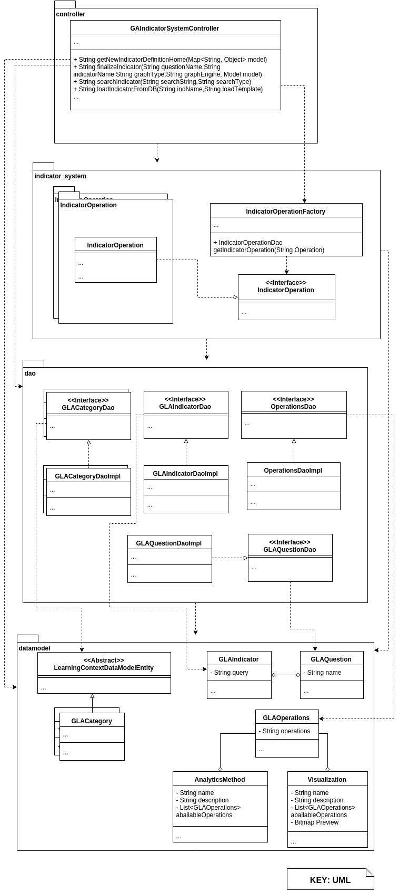

INDICATOR ENGINE: MODULE VIEWS
Primary Presentation

Element Catalog
Package: controller
This package is in charge of holding the main RESTful API endpoints of the entire system system. Classes to handle endpoints for support operations such as validation, user authentication and statistics should be integrated in this package. The OpenLAP Web Client of the complete application should communicate mainly with this module's controllers
- GAIndicatorSystemController: This controller will expose the main internal and external methods of the OpenLAP system to be used both through HTTP requests and to/from the OpenLAP Web Client that will serve as the main user interaction place to the platform. It exposes all the pertinent Indicator Engine options to Create, Update and View Indicators for he users. It also allows to perform CRUD operations on the Questions as well as linking indicators to them. The indicator engine also provides functionalities to create filters over indicators and generate the proper code based on the indicator request code it returns to the user. The Controller must have accessor clients for both the Analytics Methods and the Visualizations in order to expose the available analytics methods and visualizations when instantiating the Indicator (associating the Indicator to an Analytics Method and a Visualization). It will access the usable Analytics Methods and Visualizations through a JSON object that contains the operation of the indicator, in which case the clients will provide the possible Analytics Methods / Visualizations.
Package: indicator_system
This package holds the "business logic" of the Indicators and Questions as well as providing the drools rules and the interpreter classes for each set of rules that the system applies for eventual generation of the SQL queries that will get forwarded to the Data Collection and Data Storage macro component. It is also the implementation point for new rules to be added on the system and the preprocessing of stored indicators for the controllers to use. This package holds support classes for providing these services to the controller and sub packages for each Operation that is to be defined for the indicators.
- <<Interface>>IndicatorOperation:Interface for the Abstracting the Indicator Operations. It will be used by the Factory given what the controller requires in order to handle the appropriate instance of Indicator.
- IndicatorOperationFactory: This factory handles the passing of the correct instance of IndicatorOperation to the controller and trigger the rules that are relevant.
Package: indicatory_system.IndicatorOperation
This package is meant to be replicated for each Indicator Operation that is to be made available. Whenever new rules are added, a corresponding IndicatorOperation package with its own Dao and implementation should be created. This also implies that the main controller in the package controller.GAIndicatorSystemController should be modified in order to accommodate the new rule-set.
- IndicatorOperation: Implementation of the aforementioned IndicatorOperation. Each package that defines new rules must provide an implementation to maintain the design.The responsibility of this class is to trigger the rules based on what is passed down by the
GAIndicatorSystemController. The rules must be provided in this package as well.
Package: dao
This package holds DAO and Implementation of both Indicator, Question and Operations data and Learning Context Data Model related classes. At least an implementation of each of the DAOs corresponding to entities of the Learning Context Data Model should be able to use the package learningcontextdata and use the DataStoreAccessor to load the model from the macro component Data Collection and Data Storage.
- <<Interface>>GLACategoryDAO: (There must exist a DAO for each one of the Learning Context Data Model classes used, hence the multiplicity in the diagram) This class and the other corresponding Learning Context Datamodel DAOs are in charge of handling the Data Access for the corresponding model objects described in the package
datamodel. For each Class of thedatamodelpackage and at least for each relevant class of the Learning Context Data Model there must exist a corresponding Data Access Layer Class interface DAO. - GLACategoryDaoImpl: Implementaiton for each of the DAOs provided in the aforementioned item.
- <<Interface>>GLAIndicatorDao: Data access Object interface for the Indicators of the OpenLAP system.
- GLAIndicatorDaoImpl: Implementaiton for each of the DAOs provided in the aforementioned item.
- <<Interface>>OperationsDao: Interface for the Data Access Object handling Indicators in this macro component.
- OperationsDaoImpl: Implementation for the Data Access Object Interface for handling operations in the indicator engine.
- <<Interface>>GLAQuestionDao: Data access Object interface for the Questions of the OpenLAP system.
- GLAQuestionDao: Implementation for the Data Access Object Interface for the Questions of the OpenLAP system.
Package: datamodel
- GLACategory: (A class like this should be present for each relevant class of the Learning Context Data Model). This class represents the Category element of the Learning Context Datamodel.
- GLAIndicator: Data model object to represent the Indicators of the OpenLAP system.
- GLAQuestion: This class holds the relevant data for representing the Indicator Engine Questions.
- GLAOperations: This class holds the relevant data for representing the different Indicator operations types, for example: number, correlation, regression, etc. The operation is then turned into a set of queries through the indicator_system logic and those queries are saved into the indicator.
- AnalyticsMethod: This is a representation of the metadata required for the user to be able to isntantiate an indicator, that is, the user will associate an indicator to a determined Analytics Method in order to be able to produce post processing. This class holds the metadata necessary for the user to determine if they want to associate a determined Analytics Method to the indicator or not. Properties include description, name, availability, Indicator Operations it is available for and description of fields.
- Visualization: Similar to the previous class, this is a representation of the metadata of a determined visualization method that is made available from the Visualizer macro Component and used to instantiate an indicator (associating the indicator to an Analytics Method and a Visualization). The class holds metadata of the particular visualization (name, description, availability), what operations it is available for and a preview of data for the controller to be showed to the user and ease the instantiation of the indicator.
Context Diagram

Variability Guide
- User and session details have been omitted since they portray another aspect of the Indicator Engine. Ideally, the methods are to be restricted depending on the user role.
- Whenever new indicator rules are to be implemented, they must be connected to a consumer class in the indicator_system package within a sub-package. The class is in charge of interpreting the rules and providing a service to the controller, which needs to be then extended to hold the additional methods for interacting with any new rules and provide API endpoints in order to use them.
- The Indicator Engine, additionally to the operations it offers, communicates with the OpenLAP Web Client macro component that is able to connect to the other macro components that are specified through this architecture in the Data Collection and Data Storage and Analytics Engine macro component Views.
Rationale
The Indicator Engine macro component main purpose is to provide personalization to the user so they can establish goals and utilize existing indicators to asses their goals or reuse existing indicators made by other users. The Indicator Engine also functions as an entry point to interact with the main usage of the platform: create the indicator request codes for embedding in other applications or the user's dashboard. Additionally, the Indicator Engine must provide a means to communicate with the OpenLAP Web Client macro component for user interaction.
Related Views
- Section 4.3.2. explains the C&C Views of the Indicator Engine
- Section 4.1. explains the Data Collection and Data Storage
- Section 4.7. explains the OpenLAP Web Client macro component.